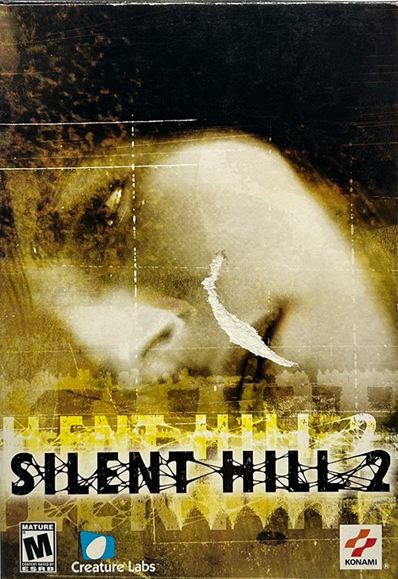

Description:
Silent Hill 2[b] is a 2001 survival horror video game developed by Team Silent, a group in Konami Computer Entertainment Tokyo, and published by Konami for the PlayStation 2. The second installment in the Silent Hill series, Silent Hill 2 centers on James Sunderland, a widower who journeys to the town of Silent Hill after receiving a letter from his dead wife. An extended version containing a bonus scenario, Born from a Wish, and other additions was published for Xbox in December of the same year. In 2002, it was ported to Windows and re-released for the PlayStation 2 as a Greatest Hits version, which includes all bonus content from the Xbox port.
